| あなたの世界を変える読書２ あなたの世界を変える１０冊の名著 | |
| 中尾信之 | |
| (2018) | |
あなたの世界を変える読書２
あなたの世界を変える１０冊の名著
□はじめに
・読書によって世界は変えられる あなたが変えられる
効率よく名著に出会おう
□第一章 世界のとらえ方を変える本
１．２０１冊目で私が一番伝えたかったこと 苫米地英人
２．すべての教育は「洗脳」である～２１世紀の脱・学校論～ 堀江貴文
３．社会主義の誤解を解く 薬師院仁志
□第二章 生き方のヒントをくれる本
４．白本２ 高城剛
５．ベーシックインカムの時代が始まる のらねこま
６．ひとりぼっちを笑うな 蛭子能収
□第三章 科学によって見方を変える本
７．農業で稼ぐ！ 経済学 浅川芳裕 飯田泰之
８．医学不要論 内海聡
９． 日本サイバー防衛＆国防白書 苫米地英人
１０．スマホでサンマが焼ける日 江田健二
□おわりに
・ 予測不能な未来を歩く
□はじめに
・読書によって世界は変えられる あなたが変えられる
効率よく、名著に出会おう
本書は、シリーズの１作目に続いて、今回も１０冊の本を取り上げ、これによって、あなたの認識能力を高めて頂き、あなたの認識する世界をご自身で書き換えて頂くためのものである。しかも、それを９８０円のキンドルアンリミテッドの読み放題サービスの中で、やってしまおうという試みである。
もともと１作目を書いたのちに、当分、このシリーズの２作目を書くことは、もっと先であろうと思っていた。
しかし、電子書籍で８冊の本を、直近一か月の間に書いている間に、書くだけではなく、読むことも続けていたのであるが、 「これは、是非、多くの方に読んで頂きたいという本に出会った」 ことが、私にもう一度、続編を書くために筆をとらせる一番の原因となった。その本は、第一章で取り上げることにした。また、１作目を書いた際に、惜しくも１０冊の選から漏れた本があったので、これもあわせて紹介したいと思っている。
さらに言うなれば、１作目を無料設定した際に、思ったよりも多くの方々に手にとって頂けたという事実も、私が２作目を書くことの後押しをしてくれた。
そして、本を書いている時間をぬって、できるだけ多くの本を読もうとしたが、取るに足らないような本も多かった。そこで私も納得したのである。
私と同じように、多くの方々も、キンドルアンリミテッドで良い本に出会いたいにも関わらず、取るに足らない本の海から、面白い本に出会うことに困っているのでは、ないかと。
私には、アマゾンのサイトにおいて、キンドルアンリミテッドで本を探している人に対して表示される本のアルゴリズムの詳細が分からない。しかし、明らかに中身の薄いものや、単なる自分のサービスへの誘導を目的としたような本も多く、そういうものが意外と目に触れやすい位置に表示されてしまっているのである。おそらく、簡単にお金が手に入るというようなことをうたったアフェリエイトビジネスに関するような本が、売れやすく、そういうものの表示頻度を上げてしまっているのだろうと思う。
毎回、不思議に思うのは、一度読んだ本であるのにも関わらず、サイトの一番目につく特別な位置に、常に表示され続けている本もある。データマイニングの強みを売りにしているサイトで、どうしてこのようなことが起こっているのかは分からないが、彼らのアルゴリズムに問題があるのか、意図的に売りたいものが表示されているのか、いずれにしても、アルゴリズムが、この程度なのだということなのである。せっかく読み放題を売り物にしているのに、良い本が、大量のその他の本に埋もれることは、まったく忍びない限りである。
多読に、意味があるといっても 、「時間という最も貴重な人生の経営資源」 を効率使うためには、中身のない本と出合う率を減らし、かつ、中身のない本と出会った場合も、途中でその本を読むことをやめ、次の本を読むのが好ましい。本を書くようになって、その思いをますます強くしたのである。
今回も、章立ての形を取っているが、章のくくりよりも、１０冊まとめて、ひとつの知識体系として、吸収をして頂ければと考えている。こうやって、１０冊並べてみると、前回と同じように、いくつかの本で、つながりとなって理解が深まるものがある。分野の違う専門家が見ている世界と、予測が重なるところがあるということである。その方向性を、あなたや私の生きている現実世界の解釈に正しく適用することができれば、私たちは、より柔軟にしたたかに、自分の世界を再構築して行くことができるのではないかと考えている。
そうしてこそ初めて、幸せな人生とはどういうものか、自分にとって幸せとは何であるかとういうことを考えるためのゲシュタルトを得ることになるのだと思う。
１作目の冒頭で文化庁の読書に関するデータを記載したが、あなたと私は既に、人口の７％に入る多読人間である。コンピュータが常に新しいオペレーションシステムや、アプリのプログラムを自動で読み込み、アップグレードしていくように、私たちも、読書を通じて新しい知識体系を吸収し、どんどん自分をアップデートしていこうではありませんか。
そうすることができれば、たとえ環境が変わっても、また自分たちをアップグレードして、その環境に最適な力を得ることができるのである。
読書によってあなたの世界観がつくられ、
あなたの認識する世界は変えられる。
認識世界が変われば、あなたが変えられる。
そして、豊かな世界を生きられるようになる。
私が、本シリーズで紹介した時点では、読み放題対象だった書籍が、その後、読み放題ではなくなっているものも出てきていますが、その点はご容赦を頂きたく思っています。そのような書籍については、私の推薦文を読むことで要点部分をご理解頂くか、興味を持たれた場合は、ご購入頂くか、その作者の他の読み放題書籍を手にとって頂ければと考えています。その点、ご了承頂きたく、よろしくお願いいたします。
□第一章 世界のとらえ方を変える本
１．２０１冊目で私が一番伝えたかったこと 苫米地英人
本書は、私が最初に手にした苫米地さんの著作である。１作目では「超瞑想法」という本を紹介させて頂いたが、入門書という意味でも、集大成という意味でも、多くの人が取りかかる本として最適だと考えて、本書を今回の１冊目とすることにした。
下記の３行はそのまま原文を引用させて頂いている。多くの著作を書かれているが、それらに共通する芯について書かれた言葉である。
「すべての人間が自由意志を持って、自ら主体的にゴールを設定して、その実現のために邁進し、結果として豊かで充実した人生を歩んでほしいということです。」
この本を読んでから、私の考え方が変わった。同時に、それまで世界にかかっていた霧のようなものが晴れてきたように思ったのである。それまでも、必要のない情報には、極力触れないようにしていたし、必要な情報だけを得るようにして、自分の価値基準を形作っていたつもりであったが、少し行き詰まりのようなことを感じていたのである。ところが、本書に出会ってから、新しい知識をつけることで、自分の世界を変えていけることを知ったのである。その結果、このように電子書籍を書くという行動を起こすことも始めたのである。
本書を読めば、世界に対する認識を変えていくためのヒントとなる言葉のいくつかに出会えることになる。そうして、あなたも自分の自由意志でゴールを設定し、豊かな人生の第一歩を歩んで頂けるのではないかと考えている。
私たち、ひとりひとりが、そのような生き方をすれば、自分たちの認識している世界だけではなく、多くの人にとっても、素晴らしい世界が作れるはずである。
２．すべての教育は「洗脳」である
～２１世紀の脱・学校論～ 堀江貴文
この本が、今回私に、執筆する決意をさせてくれた本である。１冊目に紹介した苫米地さんの本で、自由意志で生きていくことの大切さを学んでいただけると思うが、本書では、私たちが自由意志を失っていく過程で受ける日本の教育についての分析と、それを乗り越えるための術について述べられている。
堀江さんの本には、インタビュー形式の本も多いのではないかと思うが、本書は、文語体で書かれており、かつ堀江さんの並々ならぬ意志が伝わってくる価値のある一冊である。
自ら進んで行う「学び」ということを重視したうえで、社会のために、時代遅れの刷り込みとしての教育を行うこと、そのものの価値を問いただしている。私たちは学校に行くことが当然と思っているし、実際にそのようにして学校で常識を教え込まれてきた。まさに、この過程が、自分の本当にやりたいことをやることにブレーキをかけることを教えているというのである。本書では、教育というものができあがった世界の歴史も分析されている。
私にとっては、苫米地博士の本などで良く聞いている内容と似ている部分もあり、すんなりと読める内容であったが、そのような免疫がない方にとって、堀江さんの本作は、刺激が強く抵抗感を感じるかもしれない。しかし、この本は、私たちが、自分でやりたいことをやっていくために、自由に生きること、楽しい人生を生きることを後押ししてくれているだけであって、私たちを否定しているのではないということを理解して頂きたいと思う。
本書で、堀江さんが言うように、本当に、この本を読む必要がある日本社会の常識に強く洗脳されている人は、おそらく、読書という習慣を持っていないと思われる。そして、与えられた非常に限られた情報だけから、世の中を表面的に見て、自分のできることに、常に低い限界を設けてしまっていると思われる。また、本を読む人でも、堀江さんの本を手にしようとする人も少ないのではないかと思う。
テレビなどの言動や、さまざまな印象や、普通と違うという偏見で、堀江さんの本を読むことに抵抗感を持たないで頂きたいと考えている。私の場合は逆に、普通と違う飛びぬけた行動をできる人であるという印象から、堀江さんの本を読んでみたいと思ったのが、堀江さんの本との出会いであった。
考えても見てほしい。バブル崩壊後に、金融機関に７０兆円ともいわれる公的資金が投入されたが、誰も責任を取っていないのである。その時は、いろいろな会計基準などの切り替えの過渡期であったため、違法とは言えないというのが判決のようであるが、堀江さんの場合は、非常に厳しい社会的リンチのようなことを経て、執行猶予もつかず、２年６カ月の有罪判決を受けたのである。
堀江さんが買収しようとしていた、フジテレビは現在、非常に不調で、決算説明会資料を見ると、フジテレビ単体の２０１７年の４月から９月の営業利益は８億円の赤字。４月から１２月ではかろうじて３億円のプラスという状況で、これは前年比マイナス３６％である。当時、誰と組むかは別としても、新たなメディアの在り方に真剣に取り組んでおくべきだったのは、フジテレビなのである。国民の税金で支えられている電波網を利用しているにも関わらず、利権で守られているだけであって、付加価値を、ほとんど生んでいないのである。
東芝の不正会計処理問題でも、会社による旧経営陣への民事訴訟で損害賠償請求がなされているが、彼らが刑事訴訟で堀江さんのように収監される恐れがあるとは聞いたことがない。そして、バブルの崩壊自体も、不良債権の定義と、自己資本比率という 、 BI S が決めた規制を押し付けられ、それを日本政府が受け入れたことで、意図的に作られた崩壊と言われている。
本来、金融業が生まれた時から、銀行は信用創造が可能であり、担保の土地の価値が下がっても、金利分の返済がされていれば、業として問題はないのである。これは日本が自分で金融ルールを決めることができないということを表し、また、金融政策に関する国家としての主権がなかったということの証なのである。日本が生んだ柔道も、欧州でルールが決められ、彼らに有利なようにルールが決められているのと同じである。
堀江さんが行ったとされる有価証券報告書への虚偽記載は、証券取引法に違反し、株式市場の信頼を損なったと言われるが、それでは、政府が国民の年金で、海外の金融機関が保有する日本の特定銘柄を大量に購入することで、平均株価を吊り上げる株価操作（プライス・キーピング・オペレーション）は、市場を間違いなく意図的に操作しているが、これらは市場の信頼を損なう行為ではないのかという疑問が出てくる。
堀江さんが本当に有罪とされるべきだったかということを、ここでは、これ以上、議論しないが、日本の法律や、司法が公平性という点では、非常に強い裁量で、人を裁いたり裁かなかったりしているということが分かると思う。
驚くべきは、堀江さんが、そのような境遇にあっても、「刑務所ナウ」という書籍を、刑務所にいても出版したりしながら、出所されてからは、本書のような本を書いたり、宇宙ビジネスに乗り出したりと、精力的にビジネスを展開されていることである。この点だけとっても、そのバイタリティを目の当たりにすれば、この人はどういうことを考えているのか、どういうことを本に書くのかということに興味を持って頂けるのではないかと思う。
数十年前には、携帯が今のように使われる世界を想像することは難しかったし、現在花形の仕事は、当時はなかったと良く言われる。そして現在、有名な企業も、ここ最近、生まれた企業たちであることが指摘される。それに似た事柄で、本書で記載されていたのが、ＩＴということが仕事になるということは誰も考えておらず、堀江さんがプログラミングに没頭したのは、お金や仕事になるだろうからと推測したからではなく、面白いからだったというのである。それを言われると確かにその通りで、ＩＴという言葉さえなかったと考えると、今の子供たちが大人になる頃には、想像もつかない仕事が生まれていると考えることができる。
そして寿命が延びたせいで、それは子供たちだけに影響するのではなく、私たちにも影響するのである。だからこそ、堀江さんは、自分がＩＴに昔、没頭したように、私たち自身が、好きなことに没頭することにすすめているのである。
過去はライブドアという大きな組織を作った堀江さんであるが、最近は、プロジェクトごとにチームを編成し、それぞれ少人数でビジネスを回しているようである。私は、本書を読んで、やはり頭の良い人だなあという印象を持った。この本のような文章はいい加減な頭脳の持ち主では書けない内容であると思う。そしてまた、実は、人の自由意志や、人の幸せをきちんと考えている真面目な人なのだという印象を強くした。あなたは、この本を読んでどう思うだろうか。
３．社会主義の誤解を解く 薬師院 仁志
私は、資本主義礼賛主義者でも、社会主義礼賛主義者でもない。もともと、私たちの今の日本は、「修正資本主義」だと思っている。全てを自由な経済活動にまかせるのではなく、国家がセイフティネットを整えて生存権を保証したり、いろいろな規制を設けることによって、資本主義と社会主義のバランスをとった形になっていると大学生の頃から思っていた。
実際、日本の国民総生産は５４０兆円程度であるが、政府の一般会計は１００兆円で、重複を除いた特別会計２００兆円を足すと３００兆円となる。国の財政は国民の選んだ代表である国会議員による精査を受けるのが民主主義のルールではあるが、一般会計より大きな額が、国会では、精査されずに毎年計上されているのである。そして、この開かずの扉に手をつけることは、政権が変わった間にも、まったくできなかったほどアンタッチャブルなのだと言われている。５４０兆のうち、３００兆円が国がらみの支出であるということは、これを普通に資本主義と言えるだろうか。このような状態だからこそ、日本は戦後最も成長した社会主義国と言われることもあるのでる。もちろん、国の支出を除いた純粋な国民経済の規模が非常に大きい、消費牽引型の経済であることは言うまでもない。今の日本にとって、輸出という産業は、それほど大きくないのである。
資本主義は完全ではないし、社会主義も完全でもない。逆に、資本主義が不完全すぎたり、社会主義が不完全すぎたりするということでもないのである。そういう意味で、私たちは、概念を良く知らずに、資本主義が良くて、社会主義が良くないから負けたと考えがちであるが、私たちは、社会主義をもう少し知ってから議論をすべきなのではないかと思う。本書は、そのような私たちにとって、ぴったりで、そもそも社会主義という言葉がどのように始まったかを丁寧に説明してくれている。
今も、社会主義の潮流はヨーロッパでは戦後も安定的な地位にあり、労働党や社会民主主義政党として継続している。私たちが、ソ連や、中国、キューバという国で社会主義が栄えたということを考えがちであるが、思想としては、欧州で今でも生きているのである。労働党という言葉などは、まさに労働者の権利を代弁するという点において、名が体を表していると言える。
また、社会主義も私有財産を否定するものとは限らず、生産手段のみを共有することを指すとすると、体制としての社会主義にも幅があることが分かる。
そして面白いのは、 社会主義革命の思想は、高度な資本主義から社会主義に発展する形態を想定している。ところが、実際、ロシアは高度な資本主義をへずに帝政から社会主義に移行したのである。 思想と、現実は必ずしも一致するとは限らないということが分かる。
為替にも影響されるが、１ドルが１００円強として、キューバの国民総生産が９兆円から１０兆円程度となる。そのキューバでは大学でも授業料はかからず、医者にかかるのも無料という体制がとらえている。アメリカとの国交回復で、これが崩れていく可能性もあるが、これに比べて今の我々の状態はどうだろうか。
一般会計、特別会計、地方財政あわせて約３００兆円も税金や、あらゆる国民の負担から政府による支出が行われているのに、政治家たちが言っていることは、高校生の授業料について、所得制限を厳しくもうけて、無償化していきましょうということである。９兆円程度の国ができて、どうして日本ではできないのだろうか。教育は、堀江さんが言うように、工場で働く労働者を育てるためだけのものだからとすると、そこまでお金をかけても仕方がないと思っているのであれば、なるほどと思うが、政府は教育が大切だと言っているのである。
また医療についても、無用ということをうたっている本を第三章で紹介しているのにと思われるかもしれないが、お金をぬきにして、本当に必要な緊急の医療のみ限った場合、それらは無償で、国家の財政で賄われることこそ、本当の安心な社会と言えるのではないだろうか。
このように、いろいろと豊かさについて考えるための思考のヒントをくれるのが、社会主義の誤解を解くという本である。
＊平成２９年度（西暦２０１７年度）の国の一般会計は９７兆円、特別会計は４９２兆円である。また地方財政は８７兆円である。これらの重複をのぞく複雑な計算がなされた結果は、合計で２９５兆円となっている。
平成１７年度（西暦２００５年度）から、約３００兆円規模となっているのである。詳細は、次の統計局データからダウンロードした表を参照願いたい。歳入の部分を除いて、歳出だけを表示しており、色付けだけしており、内容はそのまま掲載している。
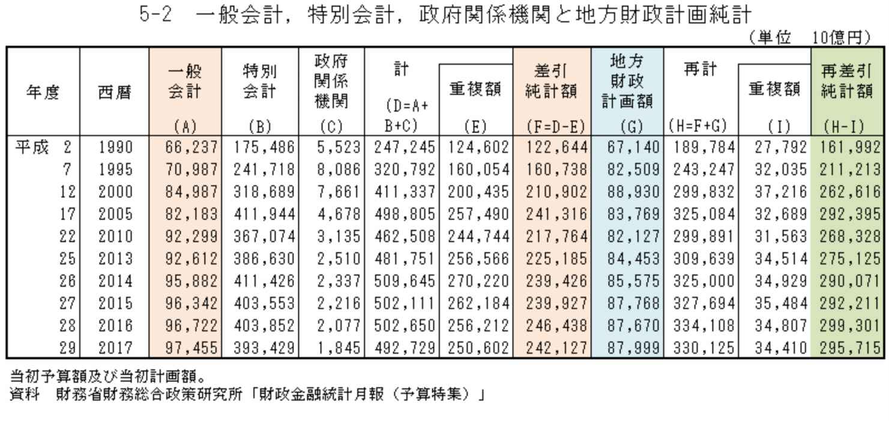
□第二章 生き方のヒントをくれる本
４．白本２ 高城剛
１作目でも取り上げた、高城さんの白本のパート２である。質問への回答形式であるため、今回取り上げた本の中でも、比較的ライトで、すぐに読める内容になっていると思う。
高城さんのどの本に記載されていたかは忘れたが、高城さんは読者を優良な３％のイノベーターに限るというようなことを書かれておられた。私たちは自分が読みたい本を読むわけであるが、著者が、自分の本に適した読者を選んでいる、もしくは自分の読んでほしいような特性を持った人にだけ分かる内容を書くということでもある。
だから、あなたや私は、この本を読めば、イノベーターになることができるということでもある。少なくともイノベーターになる可能性を持った存在になるということなのだ。これも、あなたと私の選択によって、世界を選び取る、世界を作るということに他ならないと思う。
本書でも、今回、紹介した１冊目の本や、２冊目の本と同じように、その時、その時に、自分の興味があることを大切にしているということが書かれている。そして、自分の思考の９５％を今に費やし、残りの５％を未来に費やしていると書かれている。やはり、 「今」という時を最も大切にしている のである。私たちは過去に縛られるべきではなく、未来のために今を犠牲にするべきではないのである。そして、冷静に今を見つめるためには、都会を少し離れることや、無理につながりを作ろうとせずに、孤独をポジティブに捉えるというような発想の転換についても述べられている。
孤独という言葉についても、私たちは常識で、良い、悪いという価値判断をしてしまっている。
読書という行為は、基本的にひとりで行うものである。そう考えると、孤独は私たちにとって、必要なエッセンスであると私も思う。
５．ベーシックインカムの時代が始まる のらねこま
最近、ベーシックインカムという言葉を聞くことも多くなってきていると思われるが、皆さんはどうだろうか。
さきほど、私は日本の予算について少し触れたが、もともと税金は所得の再分配機能をするという目的がある。これは自由競争の結果からこぼれた人たちに対しても、税金を通して生活するのに足りない分を補てんするということである。
ところが、政府が税金を正しく使っておらず、公務員のためや、それぞれの予算ごとに特定業界のために支出をしているのではないかということは多くの人が疑問に思っていることである。そこで、そのような無駄遣いをするくらいだったら、国民全員に数万円ずつ配りましょうというのが、乱暴に言ってしまえばベーシックインカムというものの考え方である。
本書を読んで納得したことは、国民が選んだ政治家や行政が、税金を上手に配分できないから、ベーシックインカムにしましょうという点ではなくて、今後の社会が、ベーシックインカムということを前提にしない限り、経済が回らないということを指摘している点である。
ロボットが仕事をするようになると、大企業は人を雇わずに生産をするようになり、お金が循環しないためベーシックインカム導入が必要であるというのである。
実際、このような兆候は既に出始めているのではないだろうか。今でも残業のしすぎなどが問題になっているが、実際、昔はソロバンで足し算をしていたのが、今では簡単にエクセルになり、手作業でしていたものが、機械によって対応されるということが起こっているのである。自動化された分だけ、また無駄をしているのが、今までの状態かもしれないが、これからは自動化のスピード自体がどんどん進んでいくのである。だからこそ、いろいろな方の予測どおり銀行が大規模な人員削減を実施していくことを発表し始めているし、機械化してきた製造業も、今後一層、人が不要になってくるのである。
今は、法人税を下げる風潮にあるが、今後、大きな強い会社ほど、雇用を生み出さないということが進んでいくと、どれだけ企業の生産性があがって、どれだけ安いコストで、どれだけ素晴らしい製品やサービスを作っても、あらゆる企業が雇用を減らして、給与を減らしていけば、市民の大部分は買うお金を持っていないという状態になってしまうのである。
だから、ベーシックインカムの財源は法人税として企業から徴収し、これを市民にベーシックインカムとして配り、そして企業から製品やサービスを購入してもらうということが考えられるのである。
ドラスティックな案のように思えるかもしれないが、ベーシックインカム導入はテクノロジーの進化によって、必要となってくる社会制度と言えるのかもしれないのである。
６．ひとりぼっちを笑うな 蛭子能収
この本は、実は、１作目で取り扱おうかどうしようか悩んだ本であるが、結局、１０冊という区切りを考えたため、野村監督の本を選び、こちらを１作目からはずした過去がある。
タイトルは、少し後ろ向きなタイトルであるが、この本を読んだときに、同時に読んでいた、野村監督の本や、世界一貧しい大統領「ホセ・ムヒカ」について書かれた本や、フィジーの本と重なるところがあった。それは蛭子さんが、周りに流されて、意志が弱くふらふらとしていそうなイメージがあるが、実は、自分の幸せということを明確に考えていて、自分がやりたいこと、やりたくないことという線引きを、きっちりと引いているということである。まるで、ドクターエックスの大門未知子の「いたしません」という主義のようなものである。嫌なことはせずに、極力自分のしたいことだけをすることで自分の今の幸せを追求している強い意志を持っている方なのである。
蛭子さんは最初の奥様が亡くなられた際に、本当に悲しくてぽろぽろ泣いたということを書かれているが、それはお葬式が悲しかったのではなく、かけがえのない奥様がなくなったことが悲しかったのだと思う。逆に、親御さんが亡くなられた時のお葬式で笑ってしまったというようなことをテレビで何回か聞いたことがあるが、これは蛭子さんが、一般的な常識に毒されておらず、お葬式という形式化された儀式のこっけいさを見抜いておられるのだと思う。
私たちは、蛭子さんが普通と違って面白いと感じてしまう。周りにあわせずに、いつでも食べたいものを選んで、その土地のメニューを選ばずに面白いと思ってしまうのは、よくよく考えてみると、嫌なことはしない、「いたしません」という、はっきりとした意志があることへの憧れを持っていることの裏返しの反応なのかもしれないと思うのである。
この本は、そんな蛭子さんの一流の人生哲学が書かれているのである。だからこそ、私は、１作目で掲載すべきか悩んだのである。今回、選んだ他の本と毛色は少し異なるが、この本は一流の幸福論であると思うので、ぜひ手にして頂きたいと思う。
□第三章 科学によって見方を変える本
７．農業で稼ぐ！ 経済学 自然農法 浅川芳裕 飯田泰之
私たちは幼いころから、日本の食料自給率の低さを、折に触れて刷り込まれている。しかし、この食料自給率の計算の仕方が日本の場合は特殊なのである。次の５行は農林水産省のホームページからそのまま拝借した情報である。
「平成２８年度の食料自給率は、カロリーベースでは、小麦及びてんさい等について、作付面積は拡大したものの、天候不順により単収が落ち込み生産量が減少したこと等により、３８％となりました。
また、 生産額ベースでは、野菜及び果実について、輸入額が減少する中で国内生産額が増加したこと等により、６８％となりました。 」
一般に私たちが聞いているのは、この内容の前半部分にある、４０％前後という数字である。ところが、これはカロリーベースという前提があるのである。そして、このカロリーベースで計算している国は、日本と韓国ぐらいということらしいのである。生産額ベースで６８％という数字もあり、これだけ見ても日本の自給率は必ずしも低くないと言えるのである。
さらに、３分の１程度の食べ物が捨てられているという指摘もある。しかも、１日３食になったのは、エジソンがトースターを発明してからと言われるように、 現代人は捨てるうえに食べすぎなのである。 かつ、軍人を作るドイツのフォイト栄養学の誤りを継続して、過剰な肉食を推進しているが、肉を生産するには、野菜を作るより３倍エネルギー効率が悪いのである。
自給率を上げたいのであれば、 過食をやめたり、捨てない流通を考えたり、食肉の量を少し減らすという方法が考えられるが、これらは全て国民総生産を下げることにつながるため、あまり好まれないというだけなのである。 そして、そもそも何十年も前に人類は、必要な食量を生産することができているにも関わらず、このような偏りによって、逆に栄養不足の人は発展途上国で増加しているともいわれる。
本書でも、日本の農業が弱いというのは役所の自虐広報、海外も農業は多額の補助で成立しているという事実を、きちんとした数字に基づいて指摘している。
日本の農家への所得補償は正常な国内競争や新陳代謝を悪化させていることや、農協が農業以外の仕事をしているため、農業のコストを高くしているとも指摘している。
本書とは別に、紹介したい福岡正信さんという方の著作があるが、残念ながらキンドルアンリミテッドの対象ではなく、電子書籍にもなっていないので、簡単にここで紹介させて頂きたい。
福岡さんは、自然農法を思考している人には有名な方ということであるが、私も福岡さんの本を５冊読んで、その深さに驚かされた。次に、医学についての本を紹介するが、人間にとっての現在の薬の大半が無意味なのと同じように、野菜にとっての農薬の必要性というものを科学的に、経験的に深く分析されている。
限られた実験スペースでの限られた変数のなかで、仮に効果が出た農薬があったとしても、いろいろな変数が常時変化する畑で、その農薬の効果がどれほど出るかということは非常に不安定ということなのである。農薬を減らしても、減らした割合だけ収穫が減るのではなく、収穫が減る量は、限定的になるというのである。
お米の栽培方法についても、福岡さん独自の方法を編み出したり、粘土団子という種を粘土上にして練りこんだものを砂漠の緑化に役立てたりと、国際的にも本当の自然農法を広める活動をされておられた方である。これも、一般に考えられている農業の常識というものが、どれほど脆弱なものかということが分かると思う。
思想としての自然農法をうたっているだけではなく、利益という点でみても、大量の農薬を使い、多くの機械を使い広い土地を使って農産物を生産すると、狭い土地で少ない農薬で、多くの機械を使わずに生産するよりも利益が低くなるというのである。
これは、高度に機械化され単一食物を生産する農業が、実は農業ではなく工業であり、かつ、土地を著しく傷つけてしまい継続性がないことも指摘している。これからはテクノロジーを使った農業も、どんどん進んでいくと思うが、その根底として、自然農法の考え方が、より生かされても良いのではないかと思う。話は福岡さんの本に少しずれたが、食料自給率という数字や、日本の農業について、客観的に考えるヒントをくれる本である。
８．医学不要論 内海聡
１作目でも「ワクチンのすべて」という本を紹介させて頂いたが同じ著書による、この作品を紹介させて頂きたいと思う。本書でも、医学に対する鋭い指摘がなされている。私は、内海さんや他の方の本を読んだため、去年の秋から医者や飲み薬に頼るごとをさけている。家族も出産に関すること以外、年明けから医者にかかっていないと思われる。
この本では、世界の医学村の利権を牛耳る「彼ら」という存在にも触れられている。現在の医療は、彼らの戦略もあって、病状の根本治療ではなく、維持する治療になっているということ、そして、病気がなければ、健康診断の基準数値をかえて、病気を作り出すということまでしているというのである。必要以上に、数値を厳しくしたり、コレステロールを悪者にしたりすることで、病気ですよと、人々を思わせているというのである。
もともと診断することは難しく適切な診断を受けられなかった場合、間違った処方箋をもらうことにあるが、薬は毒であるため、この毒によって、体調を悪くすることもあるのである。アメリカでは、このような薬という毒による死因がガンなどよりも多く、最大の死亡原因であるとする発表もあるのだそうだ。日本において、このような数値はとられていないとのことである。
しかし、医者は自分たちには抗がん剤を使わないという事実や、イスラエルでストライキによって病院機能がマヒした時期だけ、死亡率が下がり、病院が稼働するようになると、死亡率が悪化するという事実もあげられており、まんざら、アメリカの例が嘘ではないとも言えそうである。薬が毒ということだけではなく、水道水に含まれる塩素や、植物に残存する農薬、食べ物に含まれる化学物質なども社会毒として注意が必要で、可能な限り体に取り込まないことと、取り込んでも排毒することの重要性が説かれている。
確かに、医学が本当の役割を果たしていれば、ガンは薬で撲滅できるだろうし、アトピー性皮膚炎も、これほど蔓延せずに食い止められるはずだと私も思う。本書でも、ふたたびワクチンの害について取り上げられている。
熱帯魚を飼っていると水槽の水替えをするための水を、水道水からそのまま利用することができずに、中和剤を入れて使うか、水道水を汲みおいて１日そのまま置いて、塩素をぬくという作業をしている。そうであるならば、私たちが飲む水も塩素を気にして、１日置くか、煮沸するか、ミネラルウォーターを買うなどの対応が必要なのかもしれない。この本を読んでからは、沸騰させてから使うか、１日おいたものを飲むようにしている。
また、私が、他の本で指摘したが、塩素が社会毒であるならば、赤ちゃんの哺乳瓶を除菌するためといって、塩素の薬品を使うことは、必要な菌を殺すだけではなく、塩素もまぜるという二つの間違いをしている可能性があると思うようになった。
私たちは、お医者さんや薬に頼る思考が染みついてしまっているが、本書のような本も試しに読んでみることで、普段の常識と違う考え方があることを知り、自分の健康について冷静に考える機会となると思われる。
厚生労働省のデータをもとに、私が他の書籍のためにグラフ化した以下のグラフを見て頂きたい。青い棒グラフが一人当たりの医療費を表しており、赤い線グラフが、国民所得に対する比率をあらわしている。
一人当たりの医療費と国民所得に対する医療費の比率の双方が上昇し続けていることが分かると思う。衛生状態も栄養状態も安定している現在において、このような結果が出てくるのは異常ではないだろうか。しかも「平成１２年４月から介護保険制度が開始されたことに伴い、従来は、国民医療費の対象となっていた費用のうち介護保険の費用に移行したものがあるが、これらは平成１２年度以降、国民医療費に含まれていない。」とのことである。医療費はどこまで増えていくのだろうか。
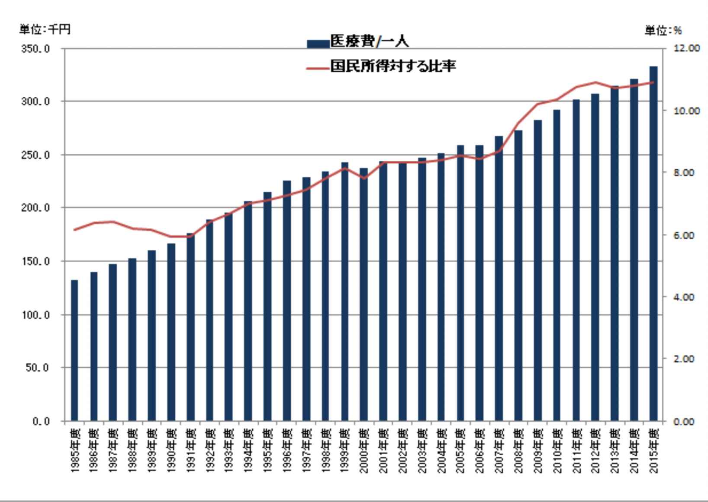
９．日本サイバー防衛＆国防白書 苫米地英人
今回は苫米地英人さんの本を二冊取り上げることにさせて頂いた。同じ方の本を２冊のせることはどうかとも思ったが、キンドルアンリミテッドの読み放題対象にしている著書の数が、他の方々とは違い圧倒的に多いのである。そのことを考えると、テーマの幅広さと、本の内容の質という点からも２冊取り上げる価値があると思うに至ったしだいである。
苫米地さんは、もともと自衛隊の５兆円の費用があれば、世界中の飢えをなくせ、それこそが本当の安全保障であると主張されている。また、他国の原子力潜水艦を１兆円ごとでリース契約すれば、複数国家の世界中に配備された原子力潜水艦を利用することができるとも提案している。実際、他国からリースしている国もあるのだという。
苫米地さんは、広く世界の軍事情勢についても非常に詳しいが、本書は、その最先端であるサイバー防衛について詳しく解説している。あわせて、「日本サイバー軍創設提案」もキンドルアンリミテッドの読み放題対象であるため、目を通してほしい。
もともと、サイバーの世界ではない現実の市街地での対テロは、各国では軍の管轄であるが、日本では警察の管轄になるなど発想自体が、ズレているというのである。そのようなズレている感覚で、サイバー防衛を考えると、組織としても、やはりサイバー先進国とは桁違いに少なすぎる人員体制となる。５兆円という費用にふれたが、お金はかければかけるだけいいというわけではなく、無駄なことにコストをかけても国民の生活の安全は守れないのである。そのようなことも分かっていないにも関わらず「この道しかない」とか、「守り切る」というような、何について言っているのか分からない、標語を与党がポスターにしているのだから、日本は、どうしようもない国なのかもしれない。
IO T であらゆるものがネットにつながれば、それだけサイバーテロの影響を受けやすい社会になるということでもある。
イランが核査察を受け入れたのは、アメリカとイスラエルの開発したウイルスによる攻撃を受けたためと言われており、実際にサイバー攻撃というのは現実の世界で起きているのである。そしてこのことが物語るのは、ミサイルの打ち合いではなく、生活インフラをとめてしまうということが、最も直接的に相手国に脅威を与えることができるということである。
実際、私たちの生活で、電車を止められたり、電力を止められたり、水道を止められれば、都市部では生活ができなくなってしまう。大雪が降った日の、東京や、東北大地震直後の東京を思い出せばすぐに想像ができることである。
１０．スマホでサンマが焼ける日 江田健二
本書は電力技術の未来がどのようになるかについて、今既に進展中の技術開発情報をもとに、具体的な可能性を提示してくれている。これを読むだけで、明るい未来が想像できる。
私たちは、東北大地震を経験して現在の電力体制が非常にもろいことを思い知らされた。その後の計画停電や、電力の値上げ、進まぬ原子炉の廃炉プロセスを見てきた。そして、震災以後の今後の電力に関するプランが以前より安心できるものとなったと思える人などいないはずである。
それにも関わらず、意見広告として、日本電力事業連合会が俳優の石塚浩二さんを起用して「電力ミックスには原子力が必要です」と宣伝をしている。この組織の役員は、全国の電力会社の社長たちである。高い電力料金をとって、私たちのお金や税金を使って、利権の亡者たちが自分たちの利権を強化するための宣伝を公共の電波にのせているのである。あの意見広告というものを見て、違和感をおぼえない人が大半であれば、この国は非常に危険であると思う。電力コストは産業の競争力に直結する重要なファクターなのである。
私も昔から疑問であったのであるが、苫米地英人さんの「原発洗脳」という本を読んで、納得したことがあった。それは、東芝がアメリカのウエスティングハウス・エレクトリックという原子力発電の技術に関する企業を買収したとされているが、実はこれは、原子力に関するコアな技術を譲渡されていないというのである。考えても見てほしい、各国の原子力潜水艦は、超小型の原子力発電所の上に、数千人が暮らしている状態なのである。つまり本当の最先端の原子力に関する技術ノウハウというのは高度に軍事的な技術であり、商業的な原子力のしかも昔の古い技術だけ東芝、もしくは日本という国に高く売りつけられたということなのである。これは、古い使えない武器だけを買わされているということと同じように見える。
「スマホでサンマが焼ける日」を読めば、電力に関する技術革新も非常に速いスピードで進んでいることが分かる。そして、このような画期的な進歩は、私たちの生活を大きく変えていく。私たちが今まで、どうしても変えることができなかった日本の電力行政の巨大な利権構造も、一気に簡単に変えていってしまうのである。下記の５行の太文字部分は、本書から原文をそのまま引用した内容であるが、「この集中から分散へ」というコンセプトで、現在のあらゆる主流となっている土台は、根本からひっくり返される可能性があることを示していると思う。
「そう考えると、世の中は「集中から分散」へのシフトと同時に、「大きいから小さい」へシフトしつつあると思います。大きいことがいいこと、大きいことがパワーを持つ時代は終わり、様々なものをダウンサイジングすること、すなわち、もののサイズを小さくしてコスト削減して効率化することが重要な時代になってきたのです。」
これは農業についても、同じことで、福岡正信さんなどは、「集中から分散へ」ということのほうが正しく、日本にはそれだけの農地と山林があることを主張されていた。現在の、大規模農業が良いという風潮はこれと反しているように思う。正しく土地が、市民に配分されていれば、家庭菜園で必要な野菜の何割かは自分で作れるのである。ところが、日本の土地は税制のゆがみなどにより、九州地方と同じサイズの所有者不明状態になっている。
細かい、電力の未来については本を読んで頂きたいため、ここでは述べないが、本書の見つめる未来は、電力というものだけにとどまらず、私たちの生活全体の明るい未来であると思う。
本書でも、やはり大きな社会変革によって、私たちは無理やり嫌な仕事をするという必要性から解放されるだろうし、これによって、ベーシックインカムが制度として必要になるというような予測もされている。これはまさに、５冊目で紹介した「ベーシックインカムの時代が始まる」と見ている未来は同じなのである。
□おわりに
・予測不能な未来を歩く
読書によって、世界を変えるという試みの中に、私自身も生きている。実際、私は、去年の１０月から組織に所属しておらず、子育てと家事に専念をしている。しかし、読書をすることを通して、自分の認識世界を変えることを、さらに加速させ、最初の１カ月の間に、７冊の電子書籍をリリースし、そして今、この本は９冊目ということになる。８冊目は、５年前に拾ったハムスターとの生活を実話の本にしたためたが、その本は、１日で書き上げた。それまでの本の文量と比較すると少ない文量ではあったが、私が思い出せることや、私のそのハムスター（パム）への感謝の気持ちをあますことなく書くことができた。そして、手元にある写真も選んで本にすることができた。残りの７冊は基本的に４日程度でしあげていった。
他の取り組みにも手をつけ始めている。単なる趣味ではあるが、それについても、また１冊本にして趣味のレバレッジをかけていこうかと考えている。２０１６年平均寿命は女性が８７．１４歳で、男性は８０．１４歳と発表された。実際、私の母方の祖母は９０歳を超えているが、私とほぼ対等に議論ができる。自分の心配より、私の母や、私の心配をしてくれている。
高城さんの白本２では、５０年後には、平均寿命が１００歳になるのではないかと記載されていた。私は、８０歳まで生きるとしたら、現在４１歳だから、まだまだ若者だなと思っていたが、１００歳まで生きるとすると、まだ６０年も社会の変化を見て、その中で生きていくことができるということである。生きていかなければいけないのではなく、生きていくことができるという感覚をした方が良いのだと思う。
定年退職の時期が後ろ倒しされたり、年金支給開始時期が後ろ倒しされたりというようなことを聞くが、嫌なことをしながら長生きをするのではなく、長く続けられる好きなことを、好きだからこそ無理なく楽しむのが、今の生き方なのではないだろうか。このことは、堀江さんの本でも指摘されている。
私たちは、いやいや読書をして、自分を無理にアップデートして、環境にあわせていくのではなく、好きだからこそ読書をして、自動的に、自然にアップデートがされていっているという自分を生きているのである。
文字にすれば「読書」という言葉になっているが、キンドルアンリミテッドを使って、電子書籍で、９８０円という少ないコストで自分の認識世界を変えようというのが、本書の試みである。
「読書」という言葉の変化が自然に起こっているように、これから、今書いている単語自体は生き続けても、言葉の中身がどんどん変わっていくというような、そんな時代に私たちは生きているのだと思う。
あなたと、私の読書の旅が楽しいものとなりますように。
そして、あなたと私の認識世界が、明るく変わっていきますように。
本書を、手にして頂き、本当にありがとうございました。
次回は、３作目でお会いしたいと思います。
中尾信之
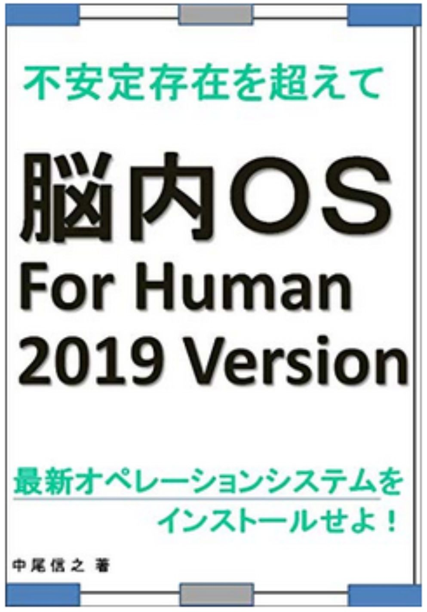
脳内ＯＳ ＦＯＲ ＨＵＭＡＮ ２０１９ ＶＥＲＳＩＯＮ
最新オペレーションシステムをインストールせよ！
https://www.amazon.co.jp/dp/B07N1T1TZF
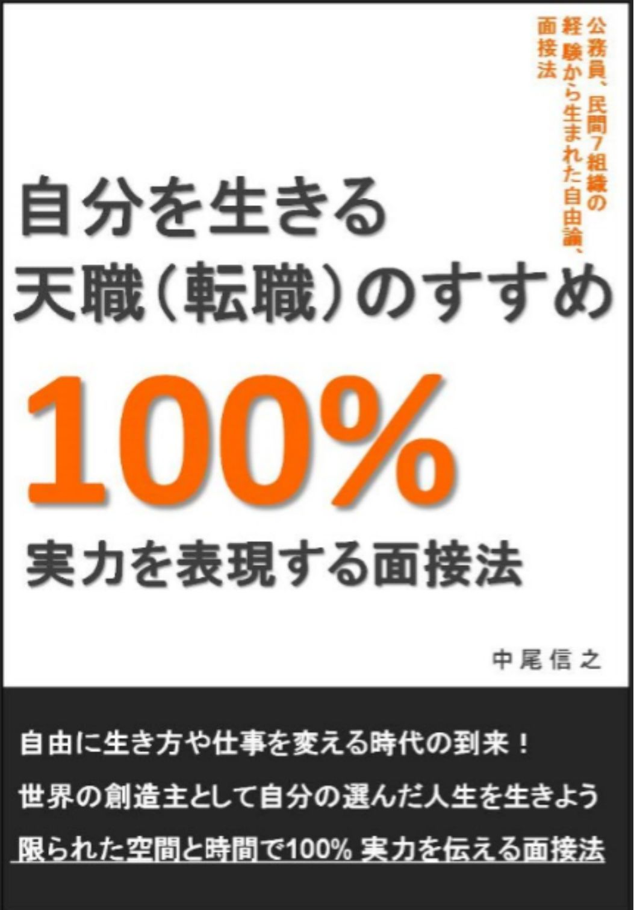
自分を生きる天職（転職）のすすめ ～１００％実力を表現する面接法～
http://www.amazon.co.jp/dp/B07BD3K67Z
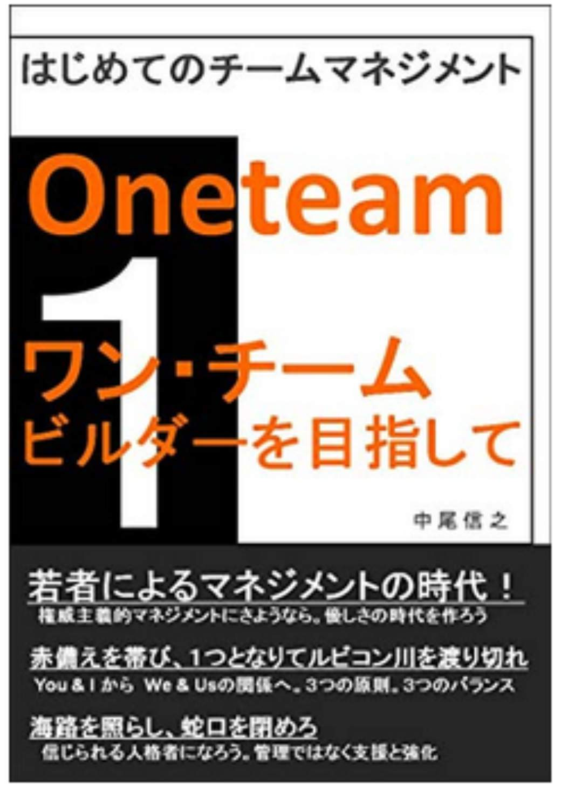
はじめてのチームマネジメント ワンチーム・ビルダーを目指して
https://www.amazon.co.jp/dp/ B07BJ98FTT
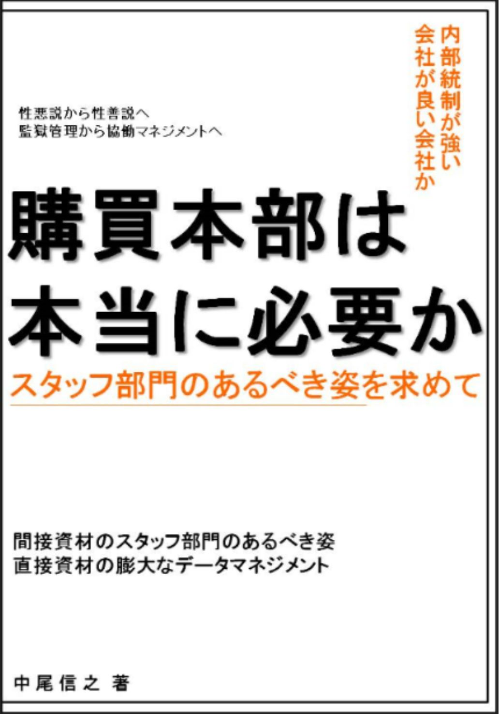
購買本部は本当に必要か スタッフ機能のあるべき姿を求めて
https://www.amazon.co.jp/dp/ B07BQ9BFDS
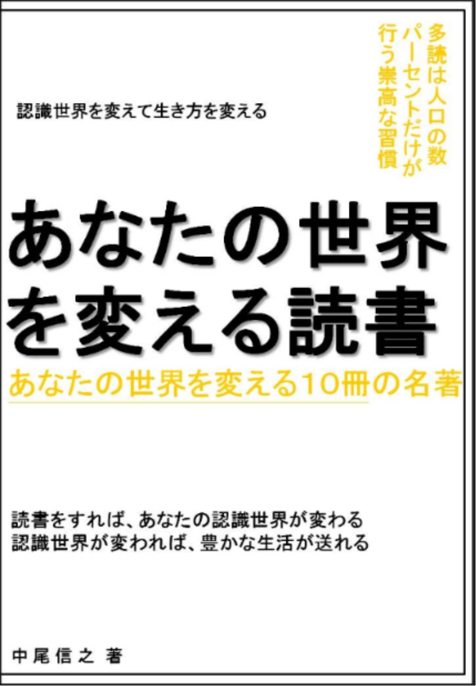
あなたの世界を変える読書 あなたの世界を変える１０冊の名著
https://www.amazon.co.jp/dp/ B07BT28HLV
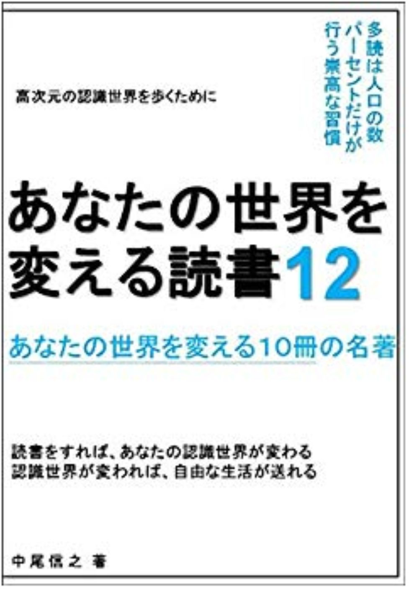
あなたの世界を変える読書１２ あなたの世界を変える１０冊の名著
https://www.amazon.co.jp/dp/B07PS8263Z
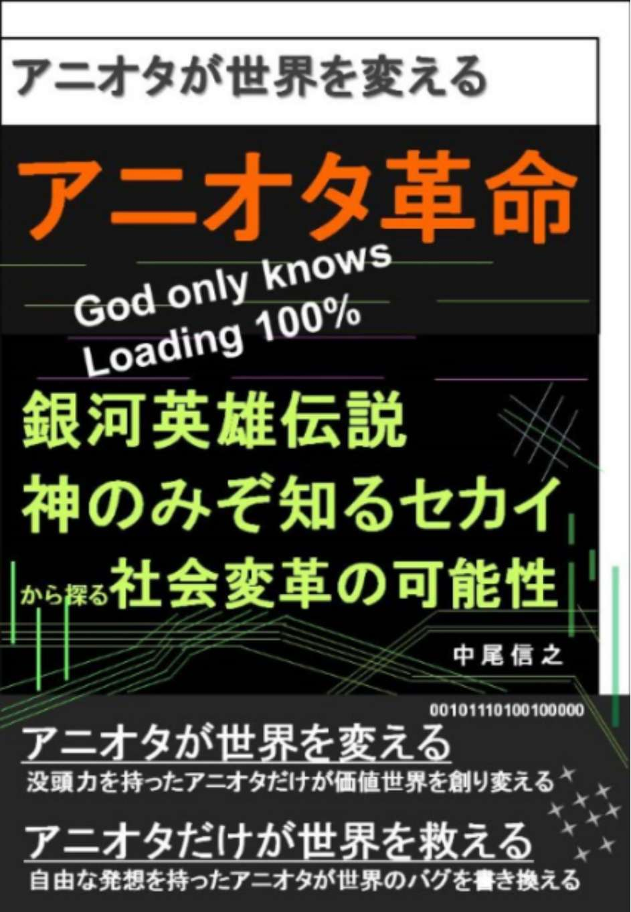
アニオタ革命 アニオタが世界を変える 銀河英雄伝説 神のみぞ知るセカイ から探る社会変革の可能性
https://www.amazon.co.jp/dp/B07CRQ3WWD
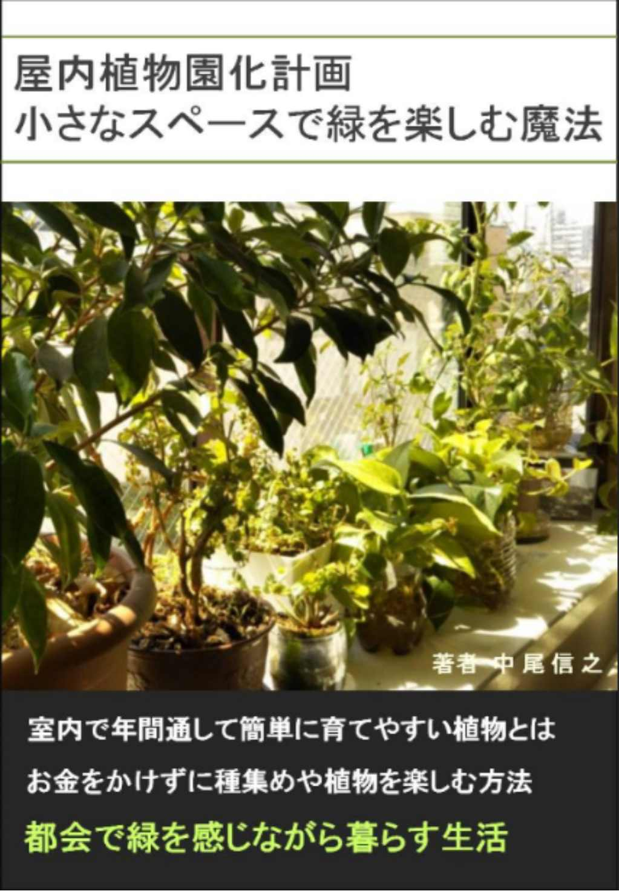
屋内植物園計画 小さなスペースで緑を楽しむ魔法
https://www.amazon.co.jp/dp/B07CWRK2CN
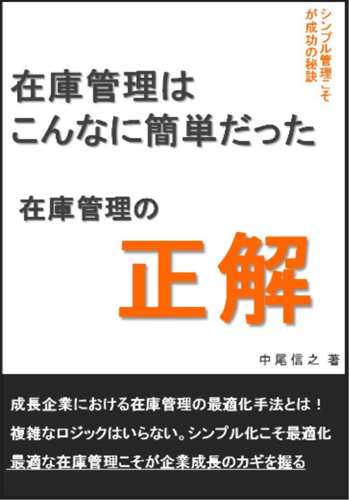
在庫管理の正解 在庫管理は、こんなに簡単だった
https://www.amazon.co.jp/dp/ B07GFS2YDN
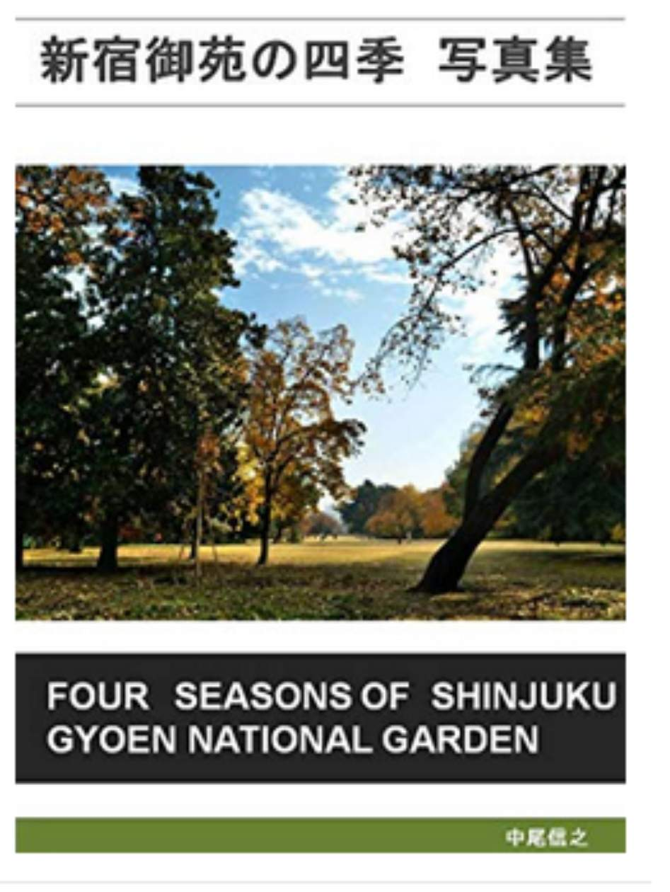
新宿御苑の四季 写真集
Four seasons of Shinjuku Gyoen National Garden
https://www.amazon.co.jp/dp/ B07N83G4L5
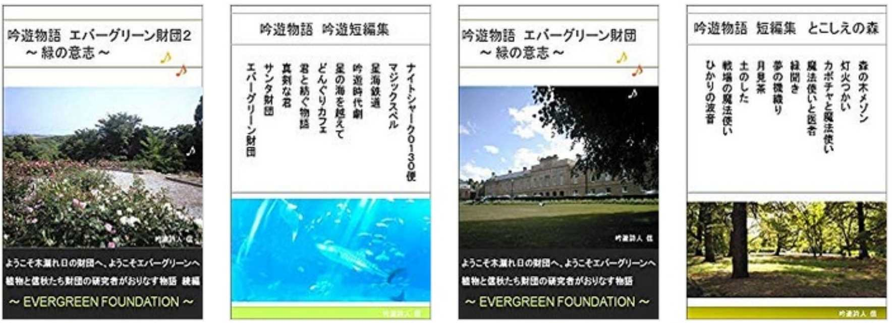
吟遊物語集 吟遊詩人信